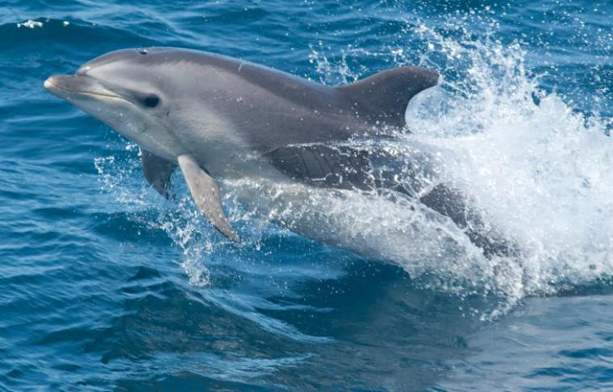
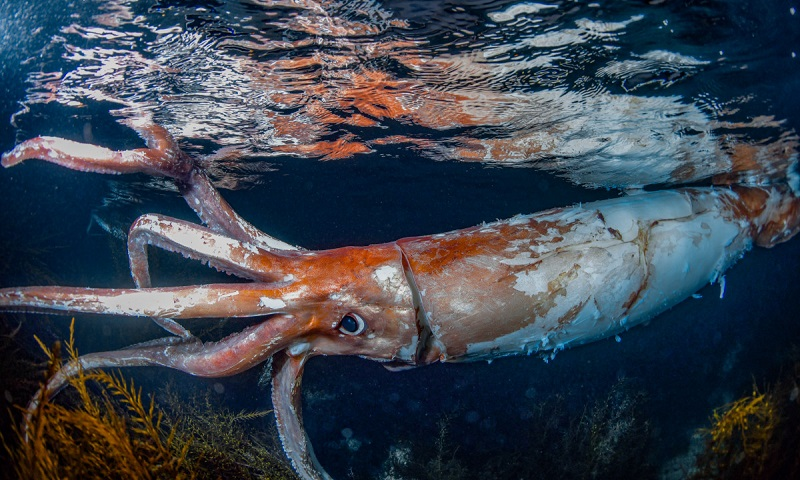
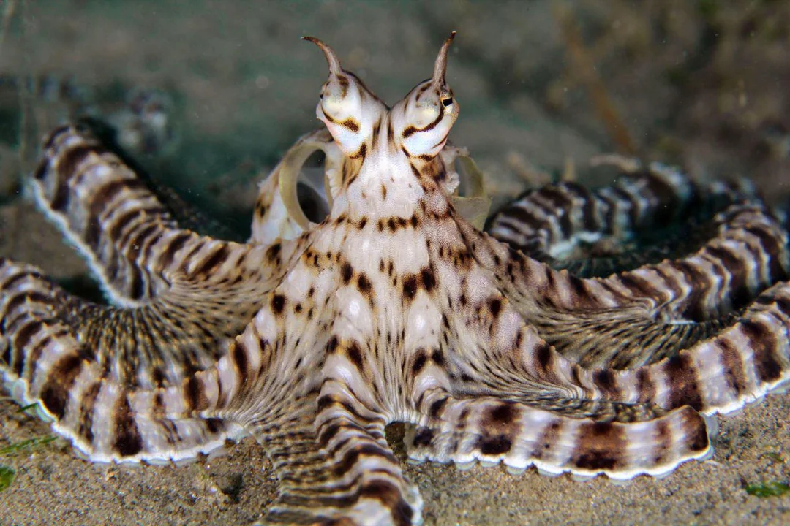
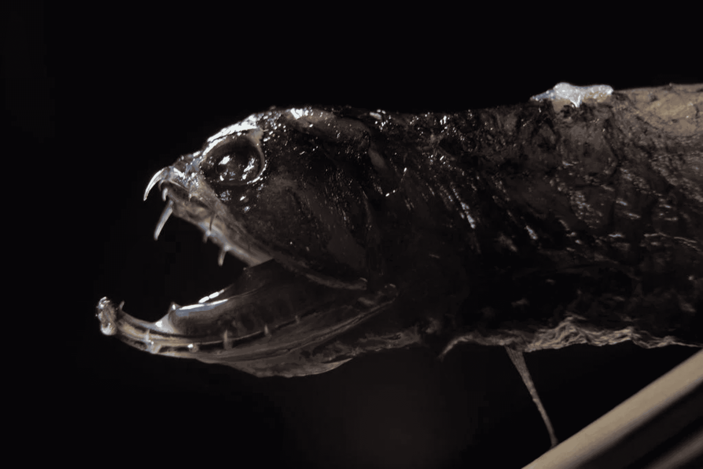
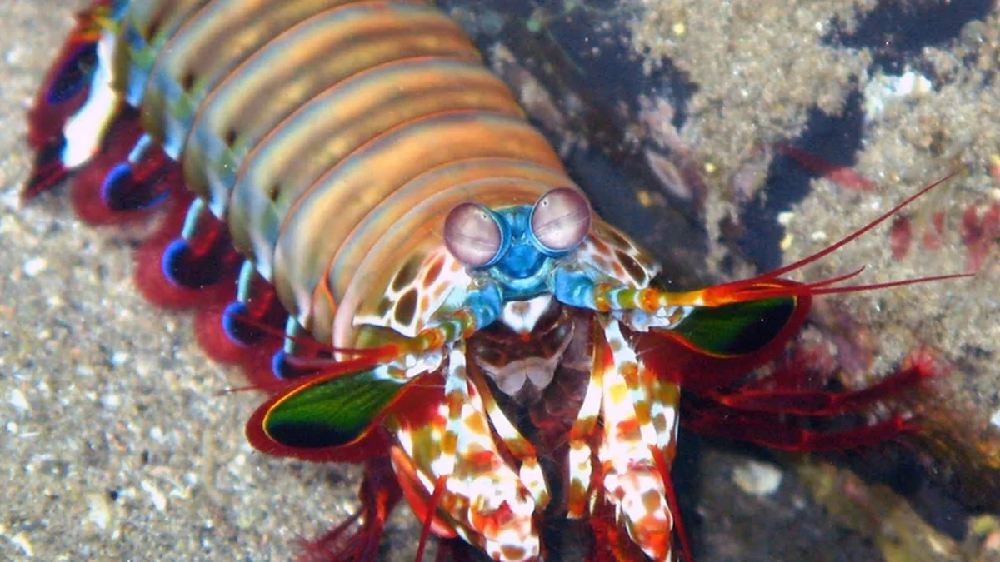

Espécies de animais marinhos
O oceano é lar de criaturas incríveis, algumas já bem conhecidas e outras que parecem saídas de
histórias de ficção. Cada uma delas possui características únicas, que revelam a diversidade e a
beleza da vida marinha. A seguir, você vai conhecer algumas espécies interessantes e curiosas que
habitam os mares do nosso planeta.
🐬 Golfinho-nariz-de-garrafa
Muito inteligente e sociável, costuma viver em grupos e se comunicar com sons complexos.

🦑 Lula-colossal
Um dos maiores invertebrados do mundo, pode ultrapassar 10 metros de comprimento.

🦀 Caranguejo-gigante-do-Japão
Dono de pernas enormes, chega a ter envergadura maior que 3 metros.

🐙 Polvo-mímico
Consegue imitar a forma e o comportamento de outros animais marinhos para se camuflar.

🐟 Peixe-dragão
Vive em grandes profundezas e possui dentes afiados e bioluminescência para atrair presas.

🦞 Lagosta-boxeadora
Pequena, mas muito poderosa, tem garras que golpeiam com força impressionante.
